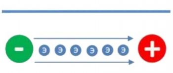
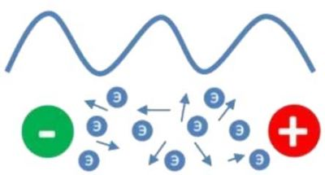

Постоянный и переменный ток. Значение трансформаторов.
Без электричества и электрических приборов уже попросту невозможно представить современный мир>. Всё к чему мы так привыкли: освещение, бытовые приборы, компьютеры, телевизоры – так или иначе связано с электропитанием. Однако, стоит отметить, что одни приборы работают от переменного тока, а другие – питаются от источников постоянного тока. Постоянным током называют ток, который в течение некоторого промежутка времени не меняет своего направления и величины. Таким образом, постоянный ток имеет постоянное напряжение и силу тока.
Постоянный ток используется:
- Для передачи электроэнергии на высоковольтных линиях электропередач (например, 500 кВ). Это связано с тем, что если применять переменный ток того же напряжения, с учетом амплитудных значений напряжений и их перепада, то такие напряжения могут превышать величину напряжения постоянного тока в несколько раз. Использование переменного тока в высоковольтных проводах приведет к дополнительным тратам на изоляционные материалы, что значительно увеличит стоимость ЛЭП
- В контактных сетях электрического транспорта – троллейбусов и трамваев – до 3000 В.
- В сетях до 1000 В для электродвигателей с тяжелыми условиями пуска – прокатные станы, центрифуги и прочее.
- Для электросетей до 500 В, используемых для грузоподъемных механизмов – подъемных электрических кранов.
- В качестве источника питания различных переносных бытовых приборов – фонарики, аудиоприёмники, диагностические приборы, мультиметры, мобильные телефоны.

Особенностями переменного однофазного тока являются:
- Среднее значение силы переменного тока за период равняется нулю.
- Переменный ток за период меняет не только направление движения, но и свою величину.
- Действующее значение силы переменного тока – это сила такого постоянного тока, при которой средняя мощность, которая выделяется в проводнике в цепи переменного тока, равна мощности, которая выделяется в том же проводнике в цепи постоянного тока. Когда говорят о токах и напряжении в сети переменного тока, имеют в виду их действующие значения.
